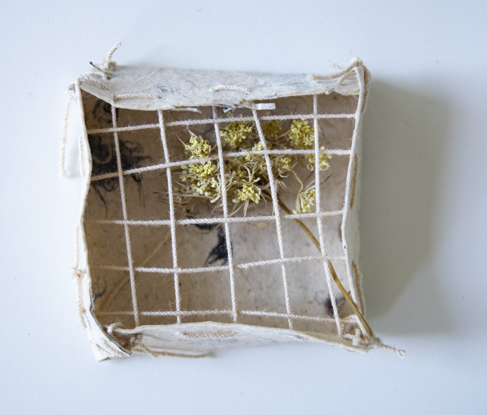
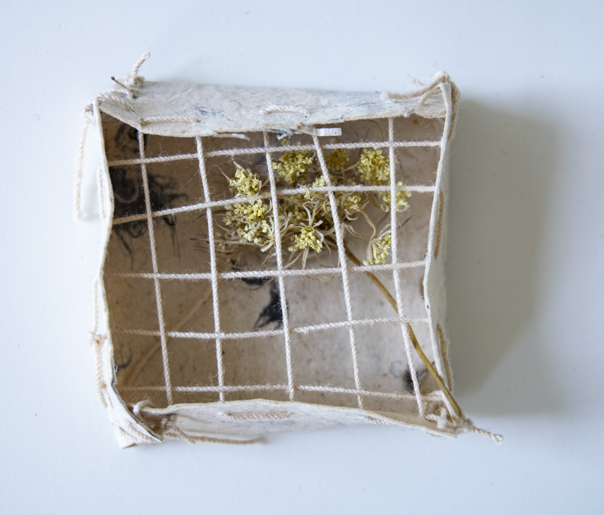

to collect/to protect/to control/to contain
2018
this is an ongoing series that began in 2018 while I was an artist in residence at the Elizabeth Murrary Artist Residency.During my time there, I became interested in the ways ephemera informs past experience and how an experience is remembered shifts with time. I began collecting primarily weeds and wildflowers around the property and through my collection process, preserving them while simultaneously letting them degrade. Since then, I've continued on with the series, collecting plant ephemera from my travels and creating similar enclosures, watching each change in subtle ways as time marches on.


 
